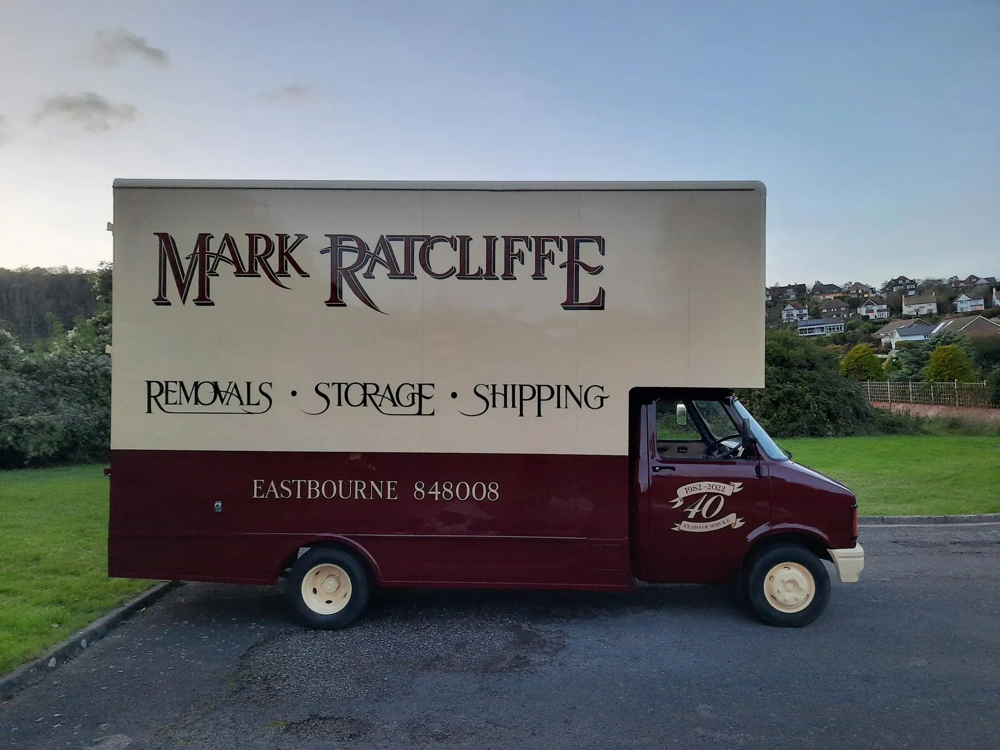
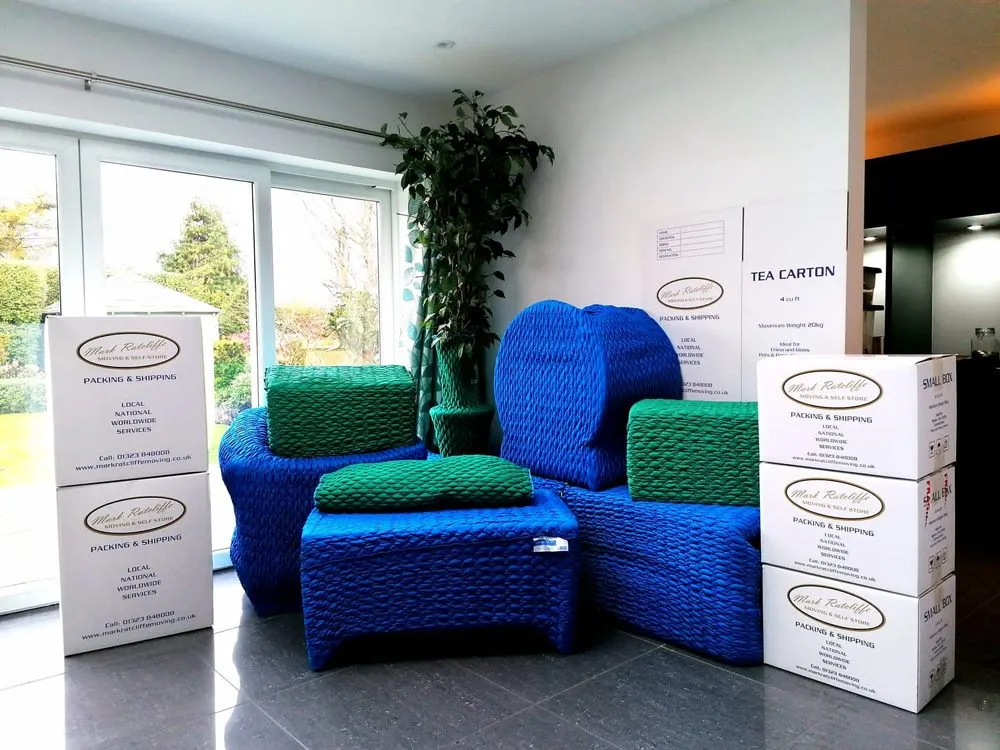

Mark Ratcliffe Moving has been the trusted name for Hailsham removals since 1982. Our depot at Lower Dicker is a three-minute drive from Hailsham town centre, which means our crews are out the gate and at your door before most other companies have left their yard. We are BAR registered, family-run, and we use the same premium pad-wrap protection on a Hailsham flat move as we do on a country-house relocation.
Single rooms, full houses, country estates. We pad-wrap, label, transport and place every item in your new home.
Learn more →Smaller, budget-friendly moves. Same BAR-trained crew, smaller vehicle, hourly rate.
Learn more →Individual steel Prestige rooms at our Lower Dicker depot. CCTV, alarmed access, monthly billing.
Learn more →Specialist UK to Thailand and worldwide door-to-door relocation service from your Hailsham home.
Learn more →Full or fragile-only packing — our premium pad-wrap method is what separates a Mark Ratcliffe move from a generic remover.
Learn more →Out-of-hours business moves with minimal downtime. IT-equipment handling and document storage.
Learn more →Choosing a local removal firm for your Hailsham move is not just about convenience — it is about cost, reliability and routing knowledge. From our Lower Dicker depot, our crews reach Hailsham via the A22, A271 and the Hailsham bypass, and they know the area's quirks: where parking is tight, which streets have low bridges, where the parking-suspension applications need to go and what time the school-run traffic builds up. National movers pricing in a Hailsham job have to factor in the long empty leg back to their yard; we do not, so our quotes are typically more competitive for Hailsham addresses.
We are also part of the local community. You will recognise our vans on the A22, A271 and the Hailsham bypass, you may have seen them at the Cuckoo Trail, Quintins Way development and the Diplocks Industrial Estate, and our family has been part of Sussex life for over forty years. Many of our customers are repeat clients or referrals from neighbours we moved years earlier.
We cover Lower Horsebridge, Magham Down, Hellingly, Upper Dicker, Stone Cross and Old Town Hailsham as part of our standard Hailsham service area, with no extra travel charges within these districts.
Every Hailsham move uses our signature pad-wrap process. Each piece of furniture is individually wrapped in a thick quilted blanket inside your home, taped, labelled, then carried out — and only unwrapped once it is placed in its final position in your new property. This is the same method used by high-end international movers, and it is why our breakage rate is a fraction of the industry average.

When a family in the new Quintins Way development outgrew their home and bought in Brighton, we surveyed on a Tuesday, packed on the Friday, loaded on the Saturday morning and were unpacking in Hove by 4pm — all within budget and with no chips on the piano.
After more than four decades of moves in this area, our crews know the practical details of every Hailsham neighbourhood — the parking pinch-points, the lifts that fit Luton vans and the ones that do not, the streets where a 7.5-tonne lorry has to drop and shuttle. We move regularly across the Diplocks Industrial Estate fringes, the older houses around George Street and Vicarage Lane, the more modern estates between Battle Road and Stone Cross, and the country properties out towards Magham Down and Upper Dicker. If your move involves a road we have not driven in a few years, our pre-move survey will visit it before we quote — we do not rely on what the satnav says about access.
Hailsham has been one of the fastest-growing towns in East Sussex over the past decade. Major developments at Quintins Way, Park Farm, Mulberry Fields, and the ongoing build-out on the western edges of the town have added thousands of new homes — and changed the kind of removals work we do here.
A decade ago most of our Hailsham work was repeat customers in the older Diplocks and Battle Road estates, and country moves out to Hellingly, Magham Down and Herstmonceux. Today around half our Hailsham bookings are families moving into the new estates from elsewhere in the South East — from London commuters relocating for the schools, from Brighton families wanting more space, and from coastal-town downsizers wanting newer-build housing within walking distance of Hailsham High Street.
For these moves we often work closely with the new-build developer's hand-over team. We know the typical access constraints on hand-over day — the show-home traffic, the kerb-stones not yet finished, the parking restrictions during construction phases. Our crews are experienced at protecting brand-new internal finishes (skirting boards, freshly painted walls, untreated stair carpets) during the unload.
One of the most common reasons Hailsham customers call us is the timing mismatch between selling and buying. The Sussex housing chain is often longer and slower than the national average, and it is very common for our Hailsham customers to need a few weeks (sometimes a few months) of storage to bridge the gap.
Our Prestige steel storage at Lower Dicker is three minutes from Hailsham High Street — closer than most customers' second drive across town. Customers regularly move out of their old home, store the entire contents at our depot for two to twelve weeks, then move into the new home with the same crew, same vehicles and same pad-wrapped items. No second remover, no third-party warehouse, no double-handling.
Pricing for a typical 3-bedroom Hailsham house stored for a month is around £160-£200 depending on volume. Insurance is available as an add-on and strongly recommended. Read more about our storage service.
From our Lower Dicker depot we can usually have a crew on-site within two working days for smaller moves. For full house removals we recommend booking three to four weeks ahead during the May-September peak, but we will always tell you honestly what we can fit in.
Yes — we have moved many families in and out of Quintins Way, Park Farm, Mulberry Fields and the older Diplocks estates. We know the access routes and parking restrictions on each.
We run our Prestige steel self-storage rooms at our Lower Dicker depot, just outside Hailsham. Individual rooms from 30 sq ft, 24-hour CCTV, alarmed access. See our storage page for details.
Yes — Magham Down, Hellingly, Lower Horsebridge, Upper Dicker, Herstmonceux and Windmill Hill are all part of our daily routes.
Call us today for a free, no-obligation quote — or use our online form. Whether it's a one-room move or a full international relocation, we've handled it before.